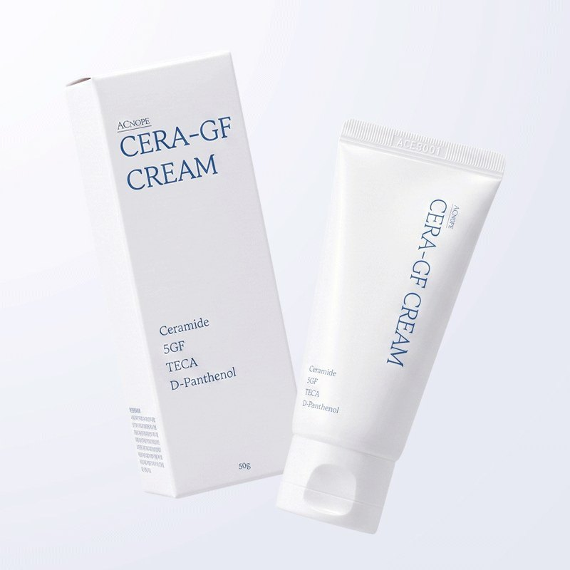
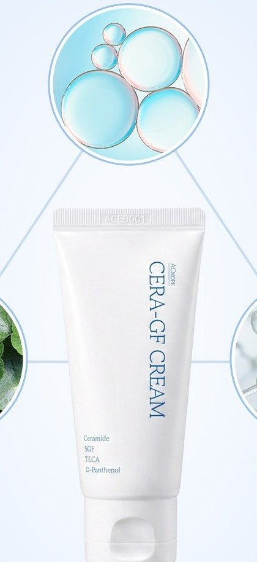
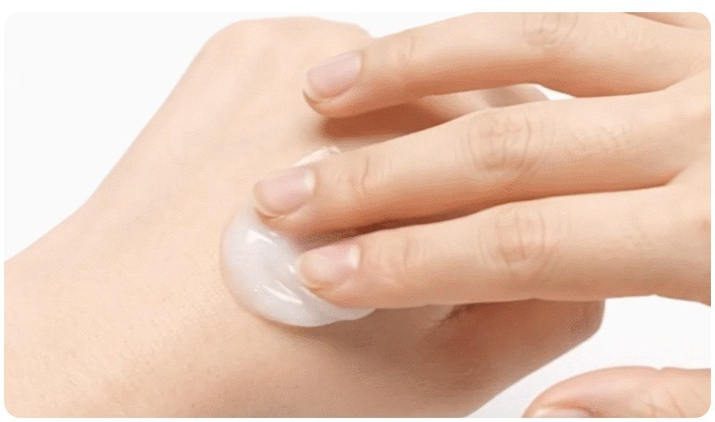

ACNOPE CERA-GF Cream Review at a Glance
This ACNOPE CERA-GF Cream review is for anyone whose cheeks feel tight an hour after washing, or who gets that patchy redness when the weather turns cold. ACNOPE (아크노프) is a Korean sensitive-skin brand, and CERA-GF is its ceramide barrier cream: a soft white cream in a 50 ml squeeze tube.
The Korean listing we looked at sells it as a duo — two tubes — which makes sense for a cream you reapply on dry patches through the day.

What Is Inside
Four ingredient groups are printed right on the tube, and the full ingredient list on the official product sheet backs them up:
| On the tube | What it means | Where in the INCI list |
|---|---|---|
| Ceramide | Ceramide NP with cholesterol and fatty acids (a lipid trio) | Mid-list |
| 5GF | Five skin-conditioning peptides (EGF, IGF, FGF-type) | Near the end |
| TECA | Centella actives: asiaticoside, asiatic acid, madecassic acid | Near the end, plus centella extract as #2 |
| D-Panthenol | Moisture and comfort; brand states 50,000 ppm | 4th ingredient |
No synthetic fragrance is added, according to the brand, and the formula skips phenoxyethanol, parabens, benzyl alcohol, benzophenone and artificial colorants.


How to Use It
- Toner after cleansing.
- Serum or ampoule if you use one.
- CERA-GF Cream as the last step, spread evenly. If you also use a gel moisturiser, put that on first.
- Through the day: a small dab on tight spots.
- Morning: sunscreen on top.
What It Feels Like
From the brand's texture photos and Korean user write-ups, CERA-GF is a soft, white cream that spreads easily without a sticky film. Korean reviewers often describe it as moist but light, comfortable even in winter, with the tube being a hygiene upgrade over the brand's older jar.
Our honest take: it is a "boring in a good way" cream. There is no scent to enjoy, no glow, no instant firming — it just keeps tight skin comfortable, which is what most people actually want from a barrier cream. Results and tolerance vary, so patch-test first.


Key Details
| Detail | What we know |
|---|---|
| Brand | ACNOPE (아크노프), made in Korea |
| Size | 50 ml tube (this listing: 2 tubes) |
| Skin type | All skin types, per the official product sheet |
| Fragrance | No synthetic fragrance (brand statement) |
| Testing | Skin primary irritation test completed (brand statement) |
| U.S. Amazon | Identical Korean duo not confirmed — we link a product-name search |
How It Compares
| ACNOPE CERA-GF Cream | Centellian24 Madeca Cream | Dr.G Black Snail Cream | |
|---|---|---|---|
| Main idea | Ceramide barrier + centella + panthenol | Centella (TECA) cream from a pharma brand | Snail-style rich moisturiser |
| Packaging | Squeeze tube | Jar | Jar |
| Best if you want | Comfort for tight, reactive-looking skin | A classic Korean cica cream | A richer anti-aging cream |
Pros & Cons
| Pros | Cons |
|---|---|
| Full ceramide-cholesterol-fatty acid trio | Small 50 ml tubes |
| Centella high in the formula, no synthetic fragrance | Peptide claims are the brand's own |
| Hygienic squeeze tube | Identical U.S. Amazon listing not confirmed |
| Spreads easily, no heavy film | Not a firming or brightening cream |
Who It Suits (and Who Should Skip It)
- Yes: Dry, tight or easily irritated-feeling skin, especially in cold weather.
- Yes: Anyone who wants a fragrance-free, simple last step.
- Maybe: Oily skin — use a thin layer.
- No: Shoppers looking for visible firming, brightening or a luxurious scent.
- Check first: Pregnancy — the brand recommends asking a professional and reviewing the full ingredient list.
ACNOPE CERA-GF Cream FAQ
Is ACNOPE CERA-GF Cream good for dry, tight skin?
That is exactly what it is designed for. The formula pairs a ceramide-cholesterol-fatty acid trio with centella and D-panthenol, the combination Korean shoppers reach for when skin feels tight after cleansing.
Does it have fragrance?
The brand says no synthetic fragrance is added, and lists the formula as free of phenoxyethanol, parabens, benzyl alcohol, benzophenone and artificial colorants.
What does 5GF mean?
It is ACNOPE's name for a complex of five skin-conditioning peptides, listed in the INCI as sh-oligopeptides and sh-polypeptides (EGF, IGF and FGF-type). Treat it as a conditioning ingredient rather than a medical treatment.
Can oily skin use it?
Yes, according to the brand's FAQ, but start with a small amount and adjust to the season.
Can I buy the exact Korean duo on Amazon?
We could not confirm an identical U.S. listing for this two-tube Korean set. The shop button opens an Amazon search for ACNOPE CERA-GF Cream so you can compare sellers and sizes.
ACNOPE CERA-GF Cream
The exact Korean two-tube set is not always on U.S. Amazon, so this opens a product-name search so you can compare sellers and sizes.